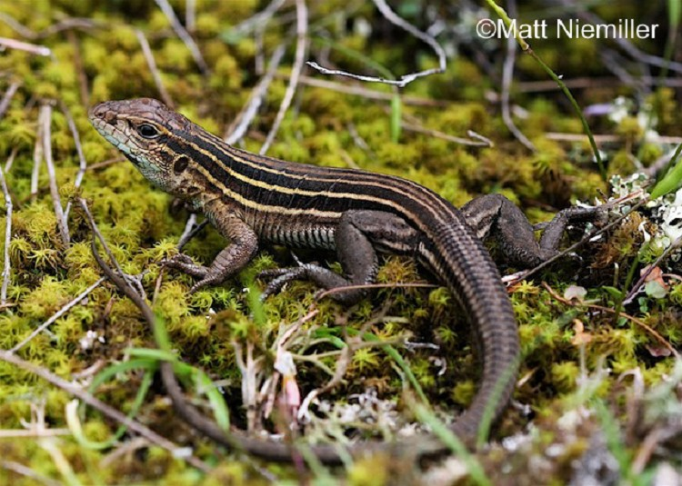
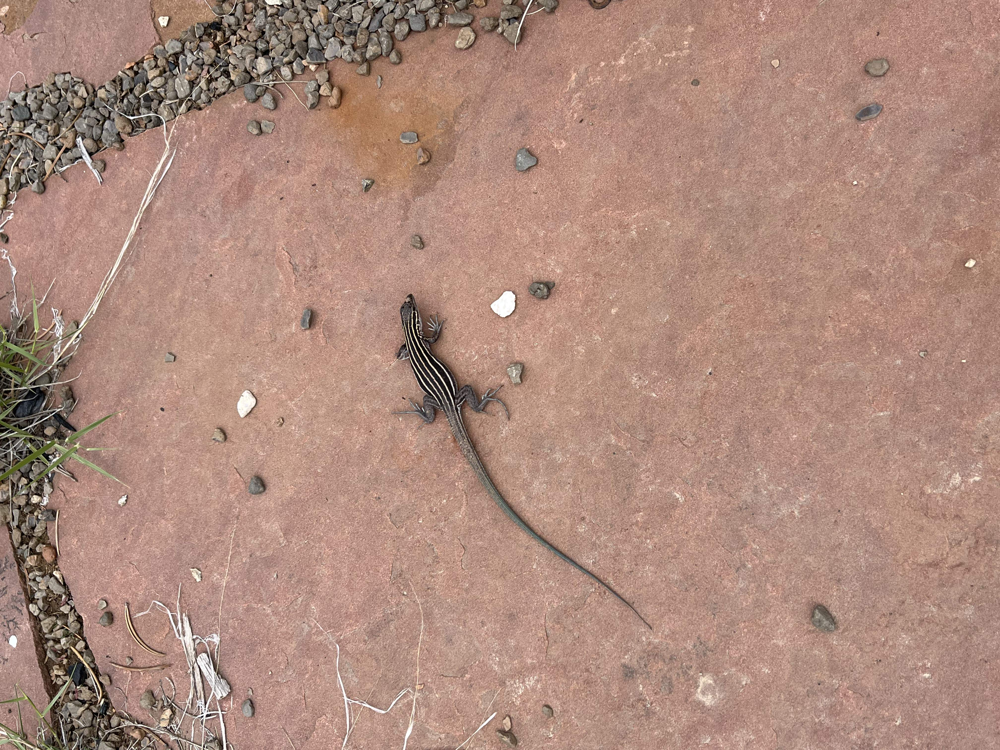
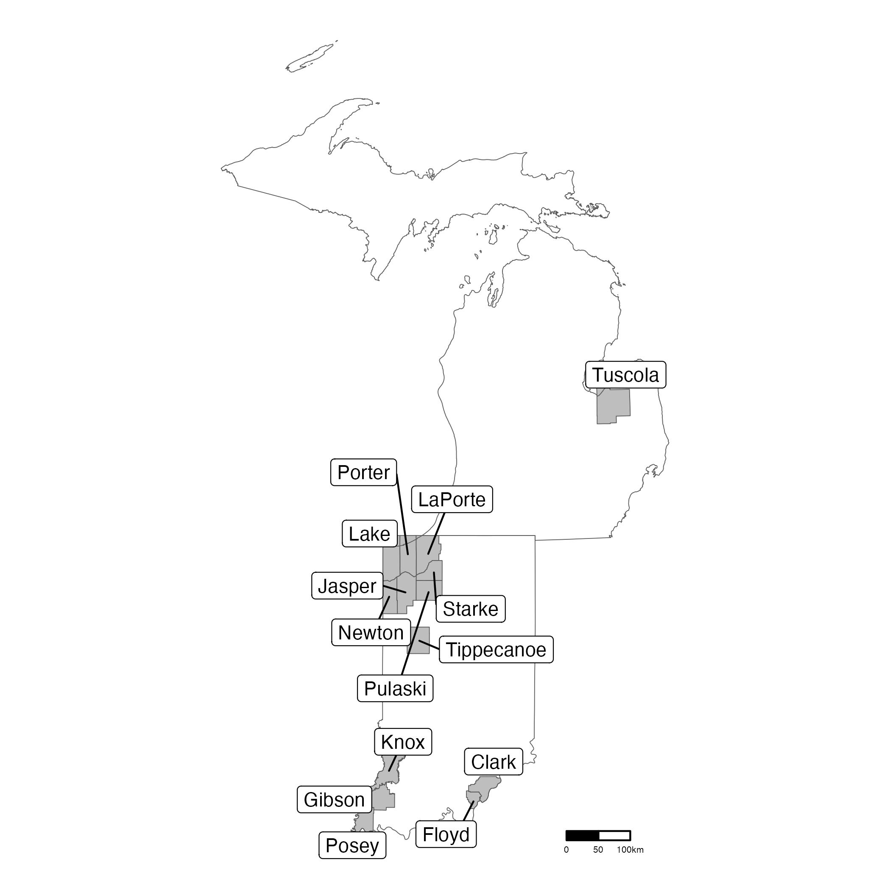
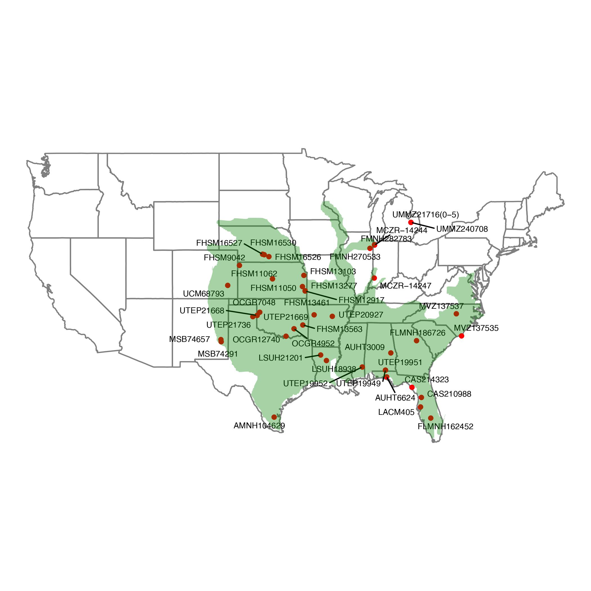
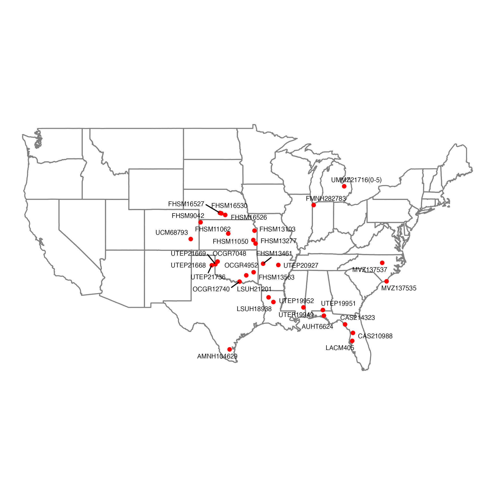
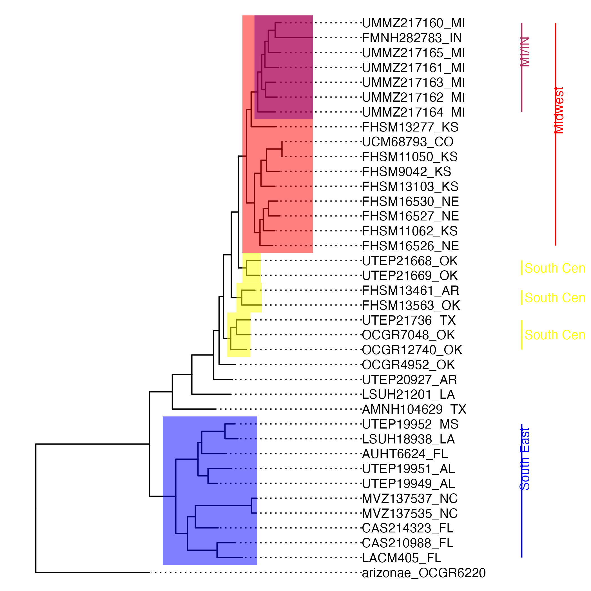
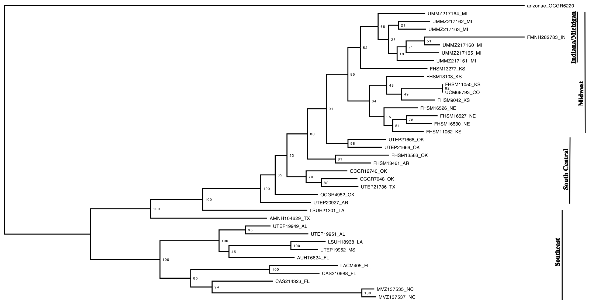
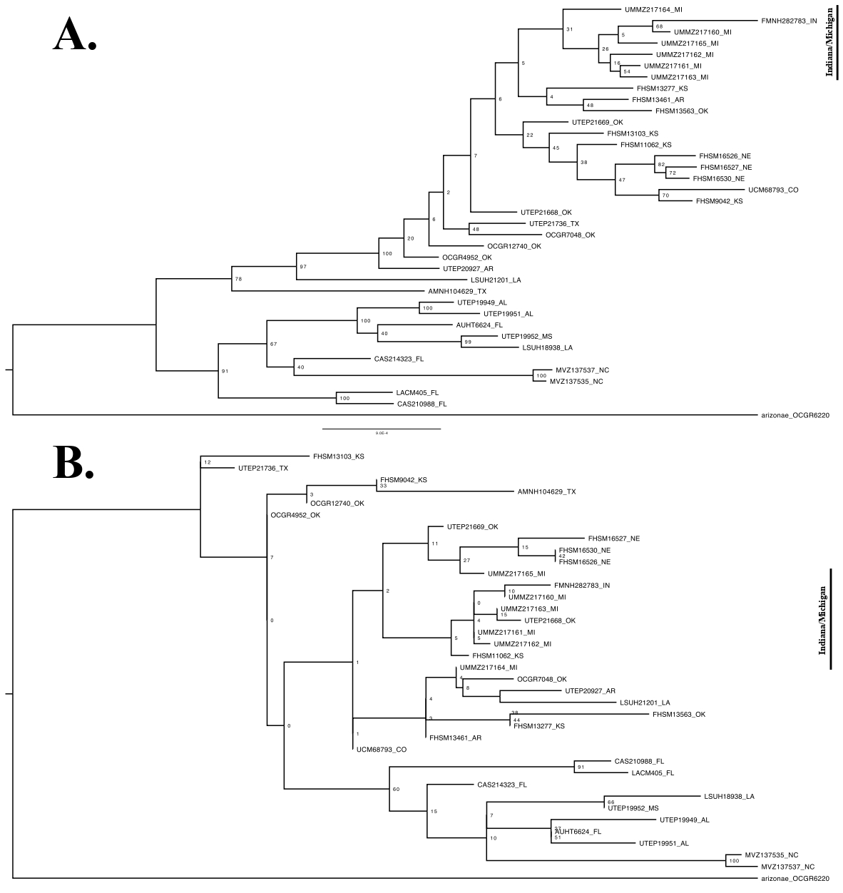
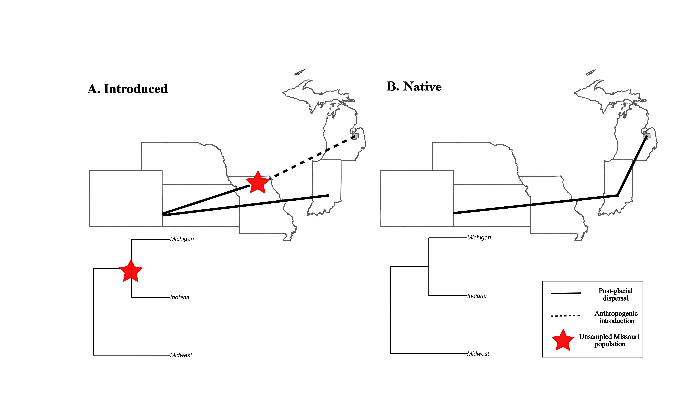

Are Critically Imperiled Six-Lined Racerunner Lizards Native or Introduced to Michigan?
Project 3
This Quarto files explores my undergraduate thesis research. For the figures, I talk through how the figures were initially made and then how I remade/improved the figures using R. The function of this file is to represent project 3, but more importantly practice making reproducible figures (and science). This Quarto file loads and manipulates several .tre and .txt files and also builds several figures to help eludicate the background and explanation of my reserach. The results are created by pulling in various R files and sent to the ‘Results’ folder. Rather than have the figures be remade every time by the Quarto file, all final figures made in R are stored in the Results folder.
Abstract
Habitat degradation and anthropogenic introduction of alien species are two of the principal factors driving global reptile decline. With a significant number of reptiles at risk of extinction, there is a growing need to locate and protect threatened native species and identify introduced and potentially invasive populations. In Michigan, six-lined racerunner (Aspidoscelis sexlineata) lizards are found in a single public game reserve, 322 km separated from the closest known other populations in Indiana. This population’s small range and recent discovery has driven numerous calls for research into the whether the population is an isolated endemic or a recent anthropogenic introduction of the lizard. We used genetic sequence data and phylogenetic methods to study the provenance of the extralimital population of six-lined racerunners in Michigan. We recover a close relationship between the Michigan population and a single specimen from Indiana. This result is consistent with either a recent anthropogenic introduction from the midwestern United States or a native Michigan population. Further resolution between these opposing hypotheses depends on increased sampling from the region, which, at present, has limited representation in natural history collections. Given their narrow range, and without definitive evidence of human introduction, we recommend that six-lined racerunner lizards continue to be treated as endemic and threatened in the State of Michigan.
Keywords: six-lined racerunners, conservation, phylogenetics, extralimital, Michigan


1.0 Introduction
Across the globe, reptiles are increasingly threatened with extinction (Cox et al. 2022). Habitat fragmentation and degradation as well as the anthropogenic spread of invasive species are some of the principal drivers of reptile decline (Cox et al. 2022; Gibbons et al. 2000; Tan et al. 2023). Habitat destruction may result in immediate loss of habitat followed by long-term alterations in the biodiversity and function of the remaining fragments (Lindenmayer and Fisher 2006; Haddad et al. 2015). Documented impacts of alien reptile species include declines of native prey species, competitive displacement, disease transmission, and hybridization with native species (Bomford et al. 2009; Cole et al. 2005).
Compared to other vertebrates, reptiles frequently have smaller ranges (Todd et al. 2010). Factors that are likely causing the more limited ranges include habitat fragmentation and the anthropogenic transport of reptiles, which has created a number of isolated populations of lizards, including 927 species that are known only from their type locality (Meiri et al. 2018). These isolated populations with limited ranges are particularly susceptible to being extirpated (Meiri et al. 2018). A potential example of this type of isolated population is a single but persisting population of six-lined racerunner (Aspidoscelis sexlineatus) lizards found in Tuscola County, Michigan (Yoder 2007; Harding 1997). The population was first documented in the late 1980’s and is estimated to contain over 450 individuals that are successfully producing hatchlings (Yoder 2007; Harding and Holman 1990). The general range of the six-lined racerunner spans from Florida to Maryland in the East and Texas to Montana in the west (Yoder 2007). However, the Michigan population is isolated from this range, and the closest population is found over 322 km away in the Indiana Dunes Region (fig. 1) (Harding and Holman 1990; Harding 1997). The extralimital population in Michigan is either native, resulting from ancient dispersal following the retreat of glaciers, and worthy of special management and conservation status or it is the result of a recent human introduction. Detecting endangered native populations and locating introduced populations of lizards is vital to the maintenance of both lizard biodiversity and protection of the ecosystems they inhabit.
In Michigan, six-lined racerunners have been found only in Murphy Lake State Game Area (MLSGA) which covers approximately 11 km2 in the lower thumb region of Michigan (State of Michigan 2016). The general Great Lakes Basin was completely covered in ice 20,000 years ago, the period of maximum southern extent of the latest glaciation, likely removing all reptiles and amphibians from the area (Harding and Mifsud 2017). The southern thumb of Michigan displays geological features characteristic of glaciation, including grooves and end moraines, which further indicate the extent of glacial coverage during the last glacial maximum (Sharif 2008). By 9,500 years ago the area was largely free of ice (Harding and Mifsud 2017). Following the retreat of ice sheets from the region, the Great Lakes Basin was quickly reinhabited by post glacial rapid dispersals of both flora and fauna (Holman and Harding 1990). A number of reptiles naturally reinvaded the basin following the glaciation, including the western slender glass lizard and potentially six-lined racerunner lizards (Holman and Harding 1990).
It appears improbable that six-lined racerunner populations persisted in Tuscola County through the Pleistocene glaciation as a true glacial relic, but the population may have reinvaded the region naturally after the glaciers retreated. During the dryer and warmer Hypsithermal Interval of the mid-Holocene (8,300-5,000 years ago), continuous prairie and grassland environments spread into southern Michigan from Northern Indiana which may have allowed expansion of the prairie dwelling six-lined racerunner into southern and central Michigan (Harding and Mifsud 2017; Harding and Holman 1990; Holman 2012). MLSGA is a forested park that is primarily surrounded by agricultural landscapes and may serve as the sole surviving piece of a once continuous population that spanned the Indiana Dunes to Tuscola County gap (Yoder 2007).
Six-lined racerunners are locally common in isolated colonies including another population in Tippecanoe County, Indiana (fig. 1) (Harding and Mifsud 2017; Minton 2001). A previous study used dorsal color and stripe count to suggest the population in Tuscola County appears more similar to the Prairie subspecies (Aspidoscelis sexlineata viridis) than to the southern subspecies (Aspidoscelis sexlineata sexlineata) (Yoder 2007). While the ranges of both subspecies are not clearly defined, the Indiana Dunes region is occupied by the prairie subspecies (Harding and Holman 1990).

Various past studies have all failed to conclusively locate the origin of the population (Yoder 2007; Sharif 2008). Fred Case, a retired orchid expert, reportedly spoke to two people who claimed to be introducing both plants and animals into MLSGA. In a personal communication with Dr. Gregory Schneide, curator of the Division of Reptiles and Amphibians at the Museum of Zoology at the University of Michigan, Dr. Schneide claimed to have information that the six-lined racerunners were introduced from Missouri (March 25, 2022). In apparent support for the introduction of herpetofauna to the region, the only known population of Northern Dusky Salamander (Desmognathus fuscus) in Michigan was also only described recently in the MLSGA (Carlson and Szuch 2005).
Despite the controversy surrounding the origin of six-lined racerunners in Michigan, the Michigan Natural Features Inventory lists six-lined racerunners as native and critically imperiled because of extreme rarity and vulnerability to extirpation from the state (2009). Based on this listing, six-lined racerunners are protected under the Endangered Species Act of the State of Michigan (Part 365 of PA 451, 1994 Michigan Natural Resources and Environmental Protection Act). It is important to determine if six-lined racerunners are, in fact, a critically imperiled native lizard in Michigan as devoting conservation management and resources to an introduced species would waste conservation resources and detract conservation management from other priorities.
Experts on herpetofauna of the Great Lakes region and past studies have called for more research to determine definitively the origin of the population (Holman 2012; Harding and Holman 1990; Yoder 2007; Sharif 2008). Six-lined racerunners have the most limited range of all Michigan reptiles and are one of just two lizard species documented in Michigan (Harding and Holman 1990). Further investigation of the population is significant as it represents half of the total lizard diversity in the state.
The objective of this study was to use DNA sequence data to determine if the extralimital population of six-lined racerunners in Michigan is a rare native lizard or the result of a recent, human mediated introduction. We assembled museum samples of lizards from the Tuscola County population and an extensive sampling of the native range, including three samples from the Indiana Dunes region (fig. 2). We used short read sequences from the nuclear genome and phylogenetic analysis to infer the origin of the population.

Definitively determining the endemic/introduced status of the population is complicated given the inconclusive results of past studies and the relatively limited amount of genetic divergence. For our analysis, we reasoned that if the extralimital population represents a formerly continuous population from the Indiana Dunes region that naturally dispersed, a phylogeny should find that the Tuscola County six-lined racerunner lizards are most closely related to samples from Indiana (fig. 3A). If the Michigan population was introduced from somewhere else in the range, then a phylogeny should find that the Tuscola population is most closely related to populations near the source location and not to the Indiana Dunes samples (fig. 3B).
Here I am experimenting embedding a pdf into a quart file. Both of these finals were made in R (Analysis_code/intro_phylos)
Fig 3. Simplified phylogenies that depict the two settlement patterns of Tuscola County, Michigan. A reflects a predicted topology for a native and once continuous population with Indiana and B reflects a predicted topology for a recent introduction from elsewhere in the range into Michigan.
If the Tuscola population groups with the Indiana Dunes sample, we would consider a post-glaciation rapid dispersal of Michigan to be the most likely scenario and indicate six-lined racerunners to be a native lizard to Michigan. If the Tuscola County population groups with samples from anywhere besides Indiana then this situation indicates that six-lined racerunners are not native to Michigan and the small population in Tuscola County is the result of a recent human mediated introduction. Based on our sampling of the range, which lacks samples from regions including Missouri, unsampled populations cannot be placed as nodes on the phylogenetic trees and some phylogenetic results may have limited resolution. Our motivation is to use the phylogenetic results to inform management decisions about the protection of the isolated and limited population of six lined racerunners, or, alternatively, to support more research into the ecological impact of the introduced and naturalized population. Determining the origin of the six-lined racerunner population and initiating further protection or research into their ecological impact is significant to the persistence of six-lined racerunners and the ecosystem they inhabit.
2.0 Methods
2.1 Sampling
To sample both the native range and extralimital population in Tuscola County, Michigan, we assembled 46 museum specimens from 40 localities (fig. 2.) (see Table 1 for a full list of samples). Collectively, the sampling included 16 states and generally spanned the entire range of six-lined racerunners (fig. 2). Seven of the samples were from the extralimital population in Tuscola County, Michigan. Three samples from Indiana (Lake and Knox Counties) and one sample from Kankakee County, Illinois were collected to represent the populations of six-lined racerunners in Indiana and Illinois. We also used an Arizona striped whiptail (Aspidoscelis arizonae) sample to serve as an outgroup in the analyses. We use the following acronyms for collections resources: University of Texas El Paso Biodiversity Collections (UTEP), University of Michigan Museum of Zoology (UMMZ), Louisiana State University Museum of Natural Sciences (LSUH), Oklahoma Collection of Genomic Resources at the Sam Noble Museum (OCGR), American Museum of Natural History (AMNH), Field Museum of Natural History (FMNH), Museum of Vertebrate Zoology at U.C. Berkeley (MVZ), Auburn University Museum of Natural History (AUHT), California Academy of Sciences (CAS), Natural History Museum of Los Angeles County (LACM), Harvard Museum of Comparative Zoology (MCZ), University of Florida Museum of Natural History (FLMNH), University of Colorado Museum of Natural History (UCM), Fort Hays State University Sternberg Museum of Natural History (FHSM), Auburn University Museum of Natural History (AUHT) (Table 1).
2.2 DNA Extraction and Sequencing
Liver or tail tissue samples were preserved either in 95% ethanol or frozen at -80℃. DNA was extracted and quantified from each using a Qubit dsDNA BR assay kit (Thermo-Fisher, Waltham, MA). The protocol was modified to elute DNA using warm water, and extractions from tail samples used a modified protocol with longer incubation times. We used the ddRADseq protocol of Peterson et al. 2012, with modifications as described in Barley et al. 2019 (ddRADseq; see Barley et al., 2019 for details) to genotype each specimen for ~2,700,000 RAD-tags. All samples were sequenced on a single lane of the Illumina 4000 NovaSeq platform for 400m-1599m paired-end reads. ### 2.3 DNA Sequence Alignments We used IPYRAD v0.9.26 (Eaton & Overcast 2020) to quality filter and demultiplex the raw sequence read data. We then mapped the RADseq data to an unpublished A. tigris genome using IPYRAD with default parameters. To complete a sensitivity test and manage the heterogeneity in read data that is common in ddRADseq data, we completed two subsequent reference-based assemblies using IPYRAD with default parameters besides modifying the minimum number of samples per locus for output. Assembly A2 required 35/37 samples, and assembly A3 required 37/37 samples to share a locus for them to be included in the assembly. ### 2.4 Genetic Analysis Using the three reference-based assemblies with varying numbers of loci included per sample, we inferred three separate maximum likelihood trees with RAxML (Stamatakis et al. 2008). RAxML was run using the GTRGAMMA nucleotide substitution model for 100 bootstraps for each phylogenetic tree. An Arizona striped whiptail (Aspidoscelis arizonae) sample was used as an outgroup to root the phylogenetic trees.
3.0 Results
3.1 Sampling
We performed DNA extraction on the tissue samples for all 46 collected museum specimens. Of the 46 original samples, DNA extraction failed to yield sufficient DNA to be included in a ddRADseq library for 8 samples and these samples were dropped from all downstream analyses. The loss of sampling coverage was significant for samples from Indiana and Illinois in which 1 (FMNH282783) of the original 4 collected samples was included in the genetic library (fig. 4). For all ensuing phylogenetic analyses, sample FMNH282783 served as the sole taxa to represent the Indiana and Illinois geographic grouping. RAD sequencing resulted in a total of ∼106 million sequence reads. The number of raw reads per sample was highly variable per sample ranging from 21,949 to 24,014,071 (Table 2 in Appendix). Genetic sequences and the catalog numbers used in this study are uploaded to GenBank.

Examination of sequence quality summaries using FastQC (Andrews, 2012) showed that raw reads had generally high scores across the entire length of the sequences. Reference based assembly of the genetic data resulted in a total of ∼20,000 loci, with coverage being highly variable across individuals and loci (Table 2). Despite having relatively low coverage compared to other samples, FMNH282783 was kept in the assemblies and phylogenetic analyses as it was crucial for placing the Indiana group on the trees. Sample FHSM11050 was removed from downstream analyses after the first assembly due to poor coverage and not being an essential sample. Table 2 in the appendix details the samples used and loci included in each assembly and phylogenetic analyses. *** 3.2 Phylogenetic Analysis Phylogenetic analyses of the RADseq dataset recovered a topology where evolutionary relationships generally reflected geographic location (fig. 5). The deepest split in the tree divides samples from the eastern United States (NC, FL) and Gulf of Mexico region (AL, MS, LA) from the majority of samples from areas further west. Within this larger group, the sole sample from Indiana Dunes is placed within a clade of the Michigan samples. The clade of Indiana and Michigan samples is rooted by sample FHSM13277_KS which was sampled from the Eastern border of Kansas just west of the Kansas and Missouri border.


3.3 Sensitivity analysis
Phylogenetic analyses of the RADseq datasets with different numbers of taxa, loci, and missing data were highly congruent (fig. 5; fig. 6). Both phylogenetic trees constructed for a sensitivity analysis generally recover relationships that reflect geographic origin and place the Indiana Dunes sample within a larger group containing the Tuscola County, Michigan samples (fig. 6). For the phylogenetic analysis with intermediate parameters (fig. 6A), the Indiana and Michigan clade is rooted by a group containing samples FHSM13277_KS, FHSM13461_AR sampled from Northern Arkansas, and FHSM13563_OK sampled from Eastern Oklahoma.

4.0 DISCUSSION
DNA sequence data, including ddRAD tags, is increasingly used to address conservation management questions (Johnson et al. 2011; Balmori-de la Puente et al. 2022). For this study, we completed an exhaustive search of herpetological museum collections to assemble tissue samples from the general range of six-lined racerunner lizards. Our intent was to place an emphasis on samples from Missouri as there has been substantial speculation that lizards from Missouri were introduced via humans to Michigan. In addition, our goal was to highlight specimens from Indiana as its proximity to Michigan increases the likelihood that the Indiana population may be the source of the Michigan population. To the best of our knowledge, there are no six-lined racerunner samples from Missouri that are available in museum collections and viable for genetic analysis. Natural history collections of six-lined racerunners from Indiana may also be limited because some populations of six-lined racerunners in Indiana are now very uncommon (Minton 2001). Sampling limitations become increasingly common when working at range boundaries and with populations facing habitat fragmentation. Our phylogenetic results provide new information on whether the extralimital population of six-lined racerunner lizards in Michigan is the result of a recent human mediated introduction or an endemic species that reached Michigan naturally as part of a post-glacial northern expansion. Sampled populations of six-lined racerunners in Michigan and Indiana likely both arose from ancestral populations in the central United States including Arkansas, Nebraska, and Kansas (fig. 4). It is possible that Central populations of six-lined racerunner lizards expanded northward into Indiana and successively into Michigan, forming a largely continuous and native population; the phylogenetic tree we recover is consistent with this scenario (fig. 6A). Our results are also consistent with a scenario where populations in Indiana arose from ancestors to the south, while the Michigan population is the product of a more recent human introduction (fig. 6B). The phylogenetic results do not distinguish between these two opposing scenarios explaining the history of the Michigan.

Our results cannot confirm oral accounts of the Michigan population being the direct result of recent human introductions from Missouri. Without sampling the populations in Missouri that potentially are the source populations of six-lined racerunner lizards in Michigan, we are unable to test for the close relationship between Michigan and Missouri samples that this scenario predicts. Fig. 7A depicts a possible scenario in which an unsampled population (possibly Missouri) may be the source of the Tuscola County population, but an unsampled populations cannot be placed on a phylogeny. Our results depict both a topology that suggests a native settlement in Michigan (fig. 7B) and a topology that supports an introduction from an unsampled population into Michigan (fig. 7A). Our results do narrow down hypotheses on the origin of the Tuscola County population. Based on current sampling, the results indicate that the Michigan population is derived from populations in the central United States, but the results do not decipher if the population was recently introduced from this region or if it is the product of a natural and stepwise path northwards through Indiana. Our results, therefore, highlight the need to further sample populations in Missouri, Indiana, and other regions of the northern range edge, as these populations are critical for further narrowing the provenance of the six-lined racerunner lizard population in Michigan. Future field work to collect six-lined racerunners in Missouri is necessary to decisively test for the ancestral relationship between six-lined racerunner lizards in Missouri and Michigan. While increased sampling and analysis of six-lined racerunner lizards may eventually reveal that the Michigan is a recent anthropogenic introduction, given the narrow range, limited population size, and lack of definitive phylogenetic evidence of a recent introduction, we recommend that six-lined racerunner lizards continue to be listed as endemic and threatened in the State of Michigan.
REFERENCES
Andrews, S. (2010). FastQC: A Quality Control Tool for High Throughput Sequence Data [Online]. Available online at: https:www.bioinformatics.babraham.ac.uk/projects/fastqc/
Balmori-de la Puente A, Ventura J, Miñarro M, Somoano A, Hey J, Castresana J. (2022). Divergence time estimation using ddRAD data and an isolation-with-migration model applied to water vole populations of Arvicola. Sci Rep. Mar 8;12(1):4065. Doi: 10.1038/s41598-022-07877-y. PMID: 35260719; PMCID: PMC8904462.
Barley, A. J., Nieto-Montes de Oca, A., Reeder, T. W., Manríquez-Morán, N. L., Arenas Monroy, J. C., Hernández-Gallegos, O., & Thomson, R. C. (2019). Complex patterns of hybridization and introgression across evolutionary timescales in Mexican whiptail lizards (Aspidoscelis). Molecular Phylogenetics and Evolution, 132, 284–295. https://doi.org/10.1016/j.ympev.2018.12.016
Bomford, M., Kraus, F., Barry, S. C., & Lawrence, E. (2009). Predicting establishment success for alien reptiles and amphibians: a role for climate matching. Biological Invasions, 11(3), 713–724. https://doi.org/10.1007/s10530-008-9285-3
Carlson, T. & Szuch, T. (2005). Geographic Distribution of Desmognathus fuscus fuscus. Herpetological Review, 36(4):461.
Cole, N. C., Jones, C. G., & Harris, S. (2005). The need for enemy-free space: The impact of an invasive gecko on island endemics. Biological Conservation, 125(4), 467–474. https://doi.org/10.1016/j.biocon.2005.04.017
Cox, N., Young, B. E., Bowles, P., Fernandez, M., Marin, J., Rapacciuolo, G., Böhm, M., Brooks, T. M., Hedges, S. B., Hilton-Taylor, C., Hoffmann, M., Jenkins, R. K. B., Tognelli, M. F., Alexander, G. J., Allison, A., Ananjeva, N. B., Auliya, M., Avila, L. J., Chapple, D. G., … de Silva, A. (2022). A global reptile assessment highlights shared conservation needs of tetrapods. Nature (London), 605(7909), 285–290. https://doi.org/10.1038/s41586-022-04664-7
Lindenmayer, D. B., Fischer, J. (2006) Habitat Fragmentation and Landscape Change: An Ecological and Conservation Synthesis (Island Press, Washington, DC)
Eaton, D. A. R., & Overcast, I. (2020). ipyrad: Interactive assembly and analysis of RADseq datasets. Bioinformatics, 36(8), 2592–2594. https://doi.org/10.1093/bioinformatics/btz966
Gibbons, J. W., Scott, D. E., Ryan, T. J., Buhlmann, K. A., Tuberville, T. D., Metts, B. S., Greene, J. L., Mills, T., Leiden, Y., Poppy, S., & Winne, C. T. (2000). The Global Decline of Reptiles, Déjà Vu Amphibians. Bioscience, 50(8), 653–666. https://doi.org/10.1641/0006-3568(2000)050[0653:TGDORD]2.0.CO;2
Haddad, N. M., Brudvig, L. A., Clobert, J., Davies, K. F., Gonzalez, A., Holt, R. D., Lovejoy, T. E., Sexton, J. O., Austin, M. P., Collins, C. D., Cook, W. M., Damschen, E. I., Ewers, R. M., Foster, B. L., Jenkins, C. N., King, A. J., Laurance, W. F., Levey, D. J., Margules, C. R., … Townshend, J. R. (2015). Habitat fragmentation and its lasting impact on Earth’s ecosystems. Science Advances, 1(2), e1500052–e1500052.https://doi.org/10.1126/sciadv.1500052
Harding J. H. (1997). Amphibians and Reptiles of the Great Lakes Region. The University of Michigan Press.
Harding, J. H., & Holman, J. A. (1990). Michigan Turtles and Lizards: A field guide and pocket reference. Michigan State University Extension.
Harding, J. H., & Mifsud, D. A. (2017). Amphibians and Reptiles of the Great Lakes Region. University of Michigan Press.
Johnson, J.R., Thomson, R.C., Micheletti, S.J. et al. The origin of tiger salamander (Ambystoma tigrinum) populations in California, Oregon, and Nevada: introductions or relicts?. Conserv Genet 12, 355–370 (2011). https://doi.org/10.1007/s10592-010-0144-2
Meiri, S., Bauer, A. M., Allison, A., Castro-Herrera, F., Chirio, L., Colli, G., Das, I., Doan, T. M., Glaw, F., Grismer, L. L., Hoogmoed, M., Kraus, F., LeBreton, M., Meirte, D., Nagy, Z. T., de C. Nogueira, C., Oliver, P., Pauwels, O. S. G., Pincheira-Donoso, D., … Roll, U. (2018). Extinct, obscure or imaginary: The lizard species with the smallest ranges. Diversity & Distributions, 24(1/2), 262–273. https://doi.org/10.1111/ddi.12678
Michigan Natural Features Inventory. (2009). Michigan State University Extension
Minton, S. A. (2001). Amphibians & Reptiles of Indiana. Indiana Academy of Science
Peterson, B. K., Weber, J. N., Kay, E. H., Fisher, H. S., & Hoekstra, H. E. (2012). Double digest RADseq: an inexpensive method for de novo SNP discovery and genotyping in model and non-model species. PloS One, 7(5), e37135–e37135. https://doi.org/10.1371/journal.pone.0037135
Sharif, G. (2014). Molecular Genetics of Michigan’s Only Population of the Six-Lined Racerunner Lizard, Aspidoscelis sexlineata. [Unpublished master’s thesis]. University of Michigan-Flint.
State of Michigan- Department of Natural Resources. (2016). Murphy Lake State Game Area Map. www.Michigan.gov/dnr
Tan, W. C., Herrel, A., & Rödder, D. (2023). A global analysis of habitat fragmentation research in reptiles and amphibians: what have we done so far? Biodiversity and Conservation, 32(2), 439–468. https://doi.org/10.1007/s10531-022-02530-6
Todd, B. D., Wilson, J. D., Gibbons, J. W., The Global Status of Reptiles and Causes of Their Decline. (2010). In Ecotoxicology of Amphibians and Reptiles (pp. 73–94). CRC Press. https://doi.org/10.1201/EBK1420064162-10
Yoder, T. (2014). Unique Herpetofauna of Murphy Lake State Game Area, Tuscola County, Michigan: Northern Dusky Salamander (Desmognathus fuscus) and Six-lined Racerunner (Aspidoscelis sexlineata) [Unpublished master’s thesis]. University of Michigan-Flint.